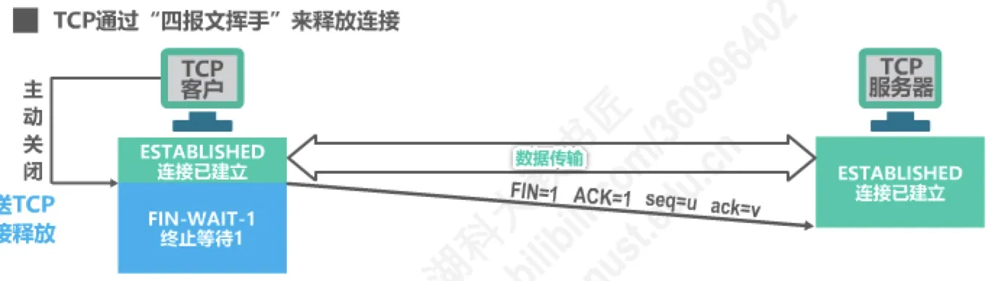
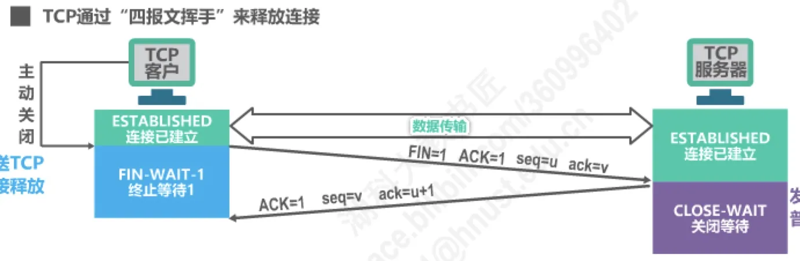
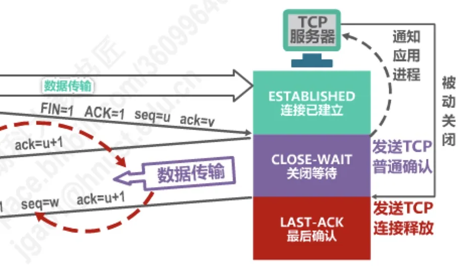
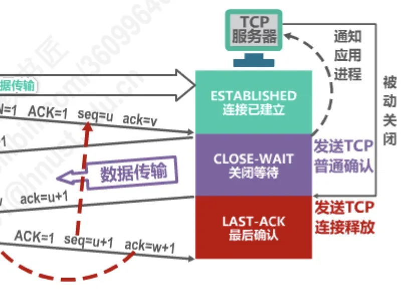
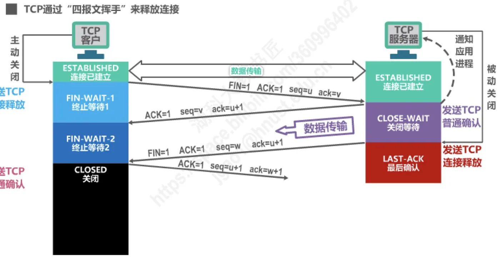
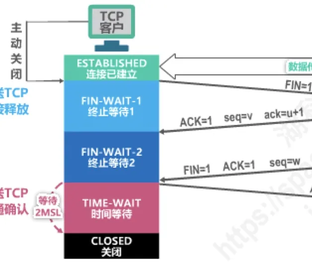
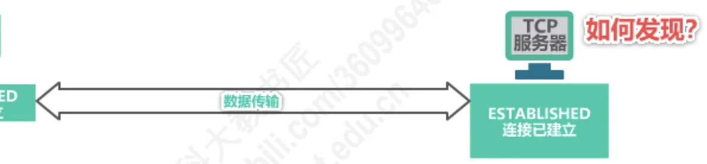

计算机通信与网络 · 第 5 章 运输层
5.8.2 TCP的运输连接管理 —— TCP的连接释放
上一节 5.8.1 用「三报文握手」建立了连接，本节讲连接的另一半——释放。TCP 连接是全双工的，两个数据传输方向要各自独立关闭，所以释放比建立更啰嗦：一次正常释放要在两端之间来回四个报文段，这就是「四报文挥手」。我们沿着客户与服务器各自的状态迁移（FIN-WAIT-1、CLOSE-WAIT、FIN-WAIT-2、LAST-ACK、TIME-WAIT、CLOSED）把这四个报文段走一遍，再解释主动关闭方为什么必须多等 2MSL 才能关闭，最后看保活计时器如何在对方主机悄无声息地出故障时发现问题。
1. 连接释放为什么是「四报文挥手」
TCP 连接一旦建立，通信双方就都能发送和接收数据，这条通路是全双工的。所谓释放连接，并不是把整条通路一刀切断，而是两个方向各自独立地关闭：一方不再发送数据，不等于另一方也没有数据要发。方向既然彼此独立，释放时就无法像建立连接那样把对方的确认捎带进自己的请求里（三报文握手的第二个报文段就把 SYN 与 ACK 合在了一起），只能一个方向一个方向地来，于是标准流程一共要交换四个报文段，这也是「挥手」比「握手」多一次的根本原因。
习惯上把主动发起关闭的一方称为客户，被动关闭的一方称为服务器。这只是本例的约定：实际通信中哪一方先调用关闭，哪一方就是主动关闭方。
一个方向已关闭、另一个方向仍能传输数据时，连接处于半关闭（half-close）状态。客户发出「我不再发送数据」的 FIN 之后，服务器仍然可以把剩余数据全部传给客户，连接真正断开要等服务器也发出自己的 FIN。这份「一半关、一半开」的能力是 TCP 连接释放的核心，也正是它必须用四个报文段、而不能草草两步收场的原因。
2. 四报文挥手的往复过程与状态迁移
先约定几个记号。FIN 标志位置 1 的报文段专门用于连接释放；序号 u 是客户此前已发送数据的最后一个字节序号加 1，v 是服务器已发送数据的最后一个字节序号加 1，w 则是服务器在关闭等待期间把剩余数据发完后的下一个序号（若服务器不再发送数据，则 w 与 v 相同）。要特别注意：FIN 报文段即使不携带数据，也要消耗一个序号，所以对方确认它时确认号要写 u + 1。
（1）第一步：客户发送连接释放报文段，进入 FIN-WAIT-1
客户的应用进程先关闭自己这一端，TCP 客户进程随即发送连接释放报文段：FIN = 1，ACK = 1（顺带确认此前收到的数据），序号 seq = u，确认号 ack = v。发送完毕，客户进入 FIN-WAIT-1（终止等待 1）状态，等待服务器确认。此时客户到服务器这个方向已经没有数据可发了。

（2）第二步：服务器确认，进入 CLOSE-WAIT
服务器收到连接释放报文段后立即回一个普通确认：ACK = 1，seq = v，ack = u + 1，并进入 CLOSE-WAIT（关闭等待）状态，同时通知自己的应用进程：对方要求关闭连接了。这一步只表示「你的 FIN 我收到了」，并不表示服务器也马上关闭——服务器到客户方向的数据传输仍可继续。从客户发出 FIN 到服务器发出自己的 FIN 之间，连接就处在半关闭状态。

（3）第三步：服务器发送连接释放报文段，进入 LAST-ACK
服务器的应用进程把剩余数据发送完毕、也调用关闭之后，服务器才发送自己的连接释放报文段：FIN = 1，ACK = 1，seq = w，ack = u + 1，并进入 LAST-ACK（最后确认）状态，等待客户对它这个 FIN 的确认。客户收到该报文段后，由 FIN-WAIT-1 转入 FIN-WAIT-2（终止等待 2）。到此为止，两个方向的「不再发送」都已通知完毕。

（4）第四步：客户确认，进入 TIME-WAIT
客户对服务器的连接释放报文段做确认：ACK = 1，seq = u + 1，ack = w + 1。服务器收到这个确认后直接进入 CLOSED（关闭）状态，它这一端的连接释放完毕；客户则进入 TIME-WAIT（时间等待）状态，还不能立刻关闭，要等到时间等待计时器所设置的 2MSL 超时之后才进入 CLOSED。也就是说，主动关闭的一方比被动关闭的一方晚一步才真正关闭连接。

把两端的路径并排看更清楚：客户走 ESTABLISHED → FIN-WAIT-1 → FIN-WAIT-2 → TIME-WAIT → CLOSED；服务器走 ESTABLISHED → CLOSE-WAIT → LAST-ACK → CLOSED。服务器不必经历 FIN-WAIT-2 和 TIME-WAIT，因为它一收到最终确认就可以立即关闭。
3. TIME-WAIT 与 2MSL：客户为什么不能马上关闭
MSL（Maximum Segment Lifetime）的意思是最长报文段寿命，即一个 TCP 报文段在网络中能够存活的最长时间，RFC 793 建议取 2 分钟。TIME-WAIT 状态使用时间等待计时器等待 2MSL（按这个建议值就是 4 分钟）才进入 CLOSED，这段等待看似浪费，却解决两个不能省略的问题。
（1）确保最后一个确认能够到达服务器
第四步的确认报文段一旦丢失，服务器就会超时重传它的 FIN 报文段（重传时机的选择与 5.6 节的超时重传时间同一套机制）。客户停留在 TIME-WAIT 期间还能收到这个重传的 FIN，并再次发出确认，服务器才能正常进入 CLOSED。反过来，如果客户发完确认就立即关闭，服务器超时重传的 FIN 将永远等不到应答，被动关闭的一方就会卡在 LAST-ACK 状态无法关闭——这正是延时等待要防的事故。
（2）让旧连接的报文段从网络中消逝
经过 2MSL，本次连接持续时间内产生的所有报文段都已在网络中消逝，不会残留在某处。这样，即使随后立刻用相同的端口建立新连接，也不会把旧连接的延迟报文段误当成新连接的数据来接收。2MSL 因此既保护了本次连接的收尾，也保护了下一次连接的开局。


注记：MSL = 2 分钟是 RFC 793 偏保守的建议值，当代多数实现把 MSL 取得更小，例如 Linux 中 TIME-WAIT 的持续时间为固定的 60 秒；但「主动关闭方多等 2MSL 再关闭」这一机制并没有改变。
4. 保活计时器：怎么发现对端主机已经出故障
连接建立后，若客户主机突然出故障（比如掉电），服务器既收不到数据，也等不来对方的 FIN，这条连接会一直挂在服务器上占用资源。为了发现这种「对方已经不在了」的情况，TCP 服务器进程使用保活计时器（keepalive timer）。
它的工作规则是：TCP 服务器进程每收到一次 TCP 客户进程的数据，就重新设置并启动保活计时器（2 小时定时）。若在定时周期内没有收到客户进程发来的数据，则当保活计时器到时后，服务器就向客户发送一个探测报文段，以后每隔 75 秒发送一次。若一连发送 10 个探测报文段后仍无客户进程的响应，服务器就认为客户进程所在主机出了故障，接着关闭这个连接。按这些数值估算，从收到最后一份数据到判定对端故障，最长约 2 小时 12 分钟。

注记：保活计时器并不是 TCP 规范强制要求的功能，规范只要求「若实现该功能，必须可配置且默认关闭」，实际是否启用由应用程序通过套接字选项决定。本讲义按教材口径把它作为连接管理的一部分介绍，便于理解服务器如何在长期空闲的连接上察觉异常。
5. 再讨论：为什么不能合并成「三次挥手」
既然第二个报文段（服务器的确认）和第三个报文段（服务器的连接释放）都是服务器发给客户的，能不能像建立连接时那样把它们合成一个，把过程缩短为三个报文段？关键要看服务器还有没有数据要发。收到 FIN 只说明「对方不再发数据了」，服务器往往还有数据留在缓冲区里，应用进程也未必马上调用关闭，因此它必须先发一个确认，把「你的 FIN 我已收到」及时告诉客户，然后从容地把自己的数据发完。只有在服务器确实再没有数据可发、应用进程随即关闭的场合，确认与 FIN 才能合并到同一个报文段中发出，过程才退化为三个报文段。所以「四次」是释放连接的一般情形，不是可以随意省掉的冗余步骤。
至于第三步和第四步，则不可能合并：它们方向相反，确认只能由收到 FIN 的那一方发出。另外，第一个报文段里 FIN = 1 与 ACK = 1 同时出现并不矛盾——FIN = 1 表示本方不再发送数据，ACK = 1 表示对已收到数据的确认，同一个报文段完全可以同时承担这两件事。
本节小结
- 连接释放之所以要四个报文段，是因为 TCP 全双工、两个方向必须独立关闭，中间还存在半关闭状态；FIN 报文段不携带数据也要占一个序号，故确认号写作 u + 1。
- 四报文挥手的状态迁移：客户 ESTABLISHED → FIN-WAIT-1 → FIN-WAIT-2 → TIME-WAIT → CLOSED；服务器 ESTABLISHED → CLOSE-WAIT → LAST-ACK → CLOSED。服务器收到最终确认即关闭，客户还要等 2MSL。
- 主动关闭方在 TIME-WAIT 等待 2MSL（MSL 由 RFC 793 建议为 2 分钟）：一是保证最后一个确认丢失时还能重发、让服务器正常进入 CLOSED；二是让本次连接的旧报文段全部从网络中消逝，不干扰随后建立的新连接。
- 保活计时器用于发现对端主机故障：每收到一次数据就重置（2 小时定时），到点后发探测报文段并每隔 75 秒重发，连发 10 个无响应即认为对端出故障并关闭连接。
- 释放过程一般不能合并为三个报文段，因为服务器收到 FIN 后通常仍有数据要发、必须先确认；只有确实无数据可发的特殊情形才可能合并。
- 本节与前后呼应：5.8.1 的三报文握手负责建立，本节的四报文挥手负责释放；下一节 5.9 讲 TCP 报文段的首部格式，其中 FIN、ACK 等标志位与序号字段的用法正来自本节描述的这些报文段；服务器重传 FIN 的等待时间则由 5.6 节的超时重传时间决定。